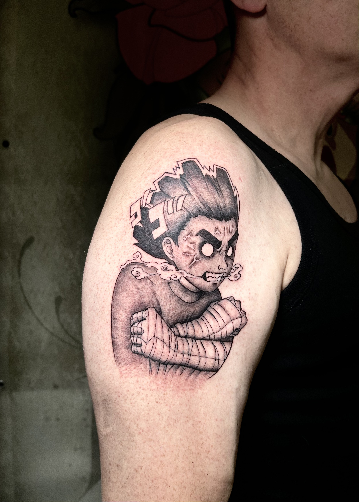
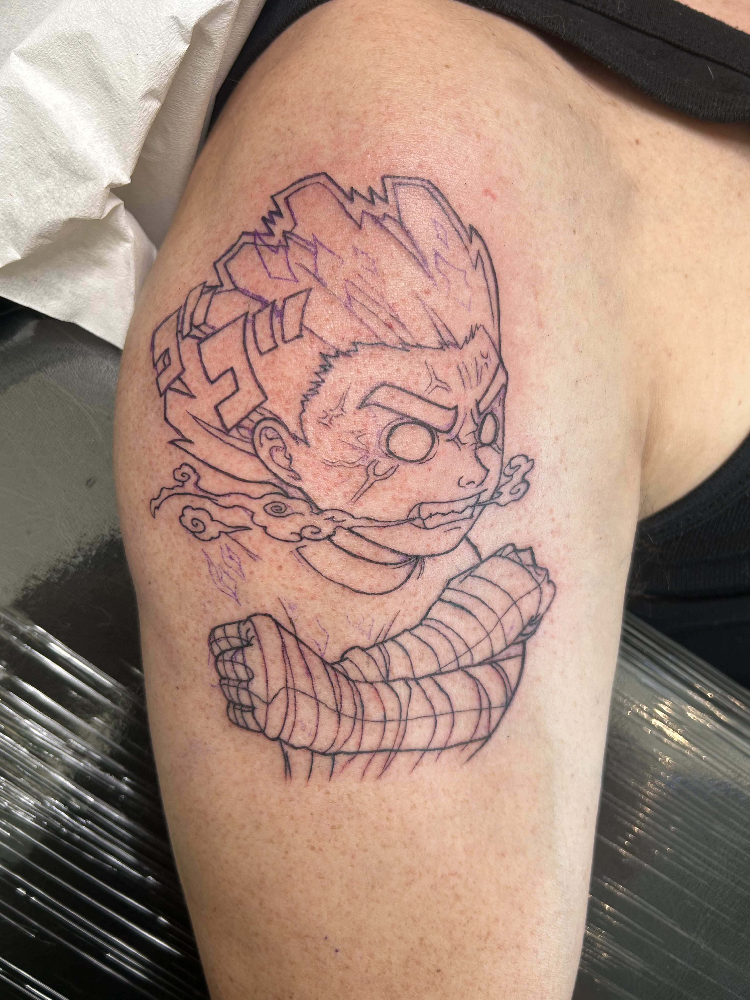
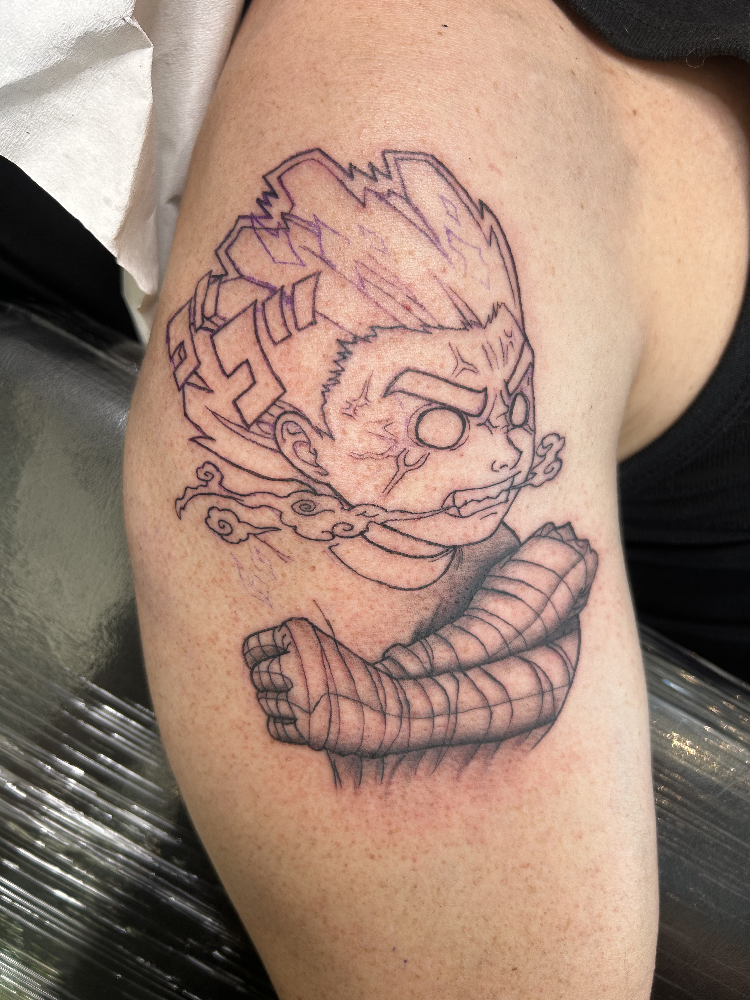

Fase 1: delineado
En la primera fase se trabajó toda la estructura principal del tatuaje, marcando el dibujo y asegurando una lectura clara del personaje.
Portfolio / Rock Lee
Anime
Tatuaje inspirado en el personaje de Rock Lee durante la batalla de los exámenes de Chūnin contra Gaara del Desierto.

En la primera fase se trabajó toda la estructura principal del tatuaje, marcando el dibujo y asegurando una lectura clara del personaje.
El sombreado comenzó por las vendas de los brazos, buscando volumen y contraste sin perder la estética anime de la pieza.
Agujas 09RL y 09RMC. Máquina: Cheyenne Sol Nova Unlimited II 4.0.

